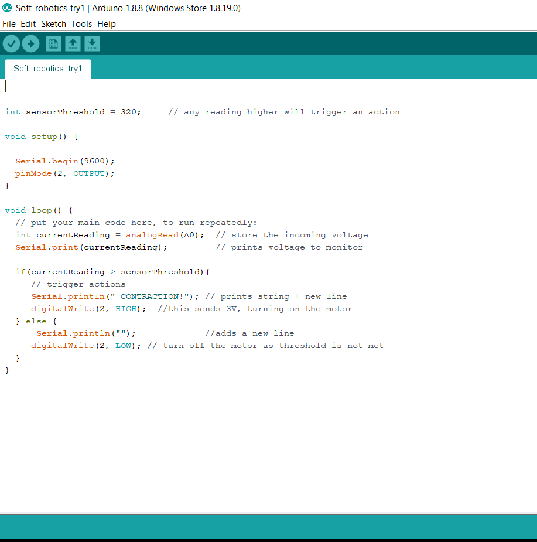

The Electronics part was mainly about the Arduino boards and the sensors and its types The Arduino board is a microprocessor that is used to control the sensors and any parts attached to it by programming it, there is so many extensions that can be attached to the board. The sensors can be created manually using special type of textiles and materials.
